| STUDENT ID | NAME |
|---|---|
| IT25102266 | Sakalasooriya S.A.A.A. |
| IT25102264 | De Silva D.L.K.C. |
| IT24101349 | Samaranayake P.I.S. |
| IT25102265 | Kavindi P.D.N. |
| IT24101008 | Wickramasinghe R.D.W.K.G.S. |
| IT24102871 | Pahasara Y.A.P. |
This project presents Lanka Ride, a web-based vehicle rental system for a company that hires cars from branches in Sri Lanka. The application is built with Spring Boot on Java 17. It replaces separate paper records for vehicles, bookings, payments, and workshop jobs with one system that customers and staff share.
A guest can search by branch and travel dates and open a vehicle. A customer can request a booking, pay the rental and the deposit, and raise a support ticket. Staff approve or deny requests, record pickup and return, hold a car for maintenance, take payment, and read a daily revenue report. An administrator adds branches and staff accounts. Pages are server-rendered with JSP, Bootstrap 5, and Spring Security tags. MySQL 8 stores the records. Each person sees only the functions of their role.
The main objective is a single, role-based system for day-to-day vehicle rental work.
The specific objectives are:
Scope:
Limitations:
Vehicle management. The fleet coordinator registers a vehicle with its registration number, category, brand, model, seats, gearbox, fuel type, features, photo, daily rate, deposit, home branch, and status. Records can be updated, and a car can be retired. A branch transfer is stored as its own row, with the vehicle and the branches it left and joined. Guests can filter the catalogue by branch, dates, category, gearbox, fuel, and price. When dates are supplied, a car with an overlapping active booking, or a car that is not available, is left out of the results.
Booking management. A signed-in customer chooses an available vehicle, a pickup branch, and the pickup and return dates. The service checks availability again when the request is saved. The booking supervisor approves or denies the request and records a reason. Pickup stores mileage and fuel. Return stores the same pair and raises a discrepancy note when they do not match what was expected. A customer can cancel a request that has not started. Status values are pending, approved, denied, ongoing, completed, and cancelled. Payment status is stored separately, so a trip can be approved and still unpaid.
Fleet maintenance. The fleet coordinator opens a maintenance record with a type, dates, estimated and final cost, the mechanics assigned, and a description. Opening the job sets the vehicle to maintenance, which removes it from customer search. The booking service also refuses dates that overlap an open job. Closing the job returns the vehicle to available when no other job is open. Status values are open, in progress, and closed.
Payment and billing. The finance manager records a rental payment and a refundable deposit against a booking. Each movement is its own row: type, amount, success or failure, a mock gateway reference, a note, and the staff username that recorded it. A refund, a late fee, or a damage charge is another row on the same booking, so the history is not overwritten. An invoice page can be printed. Card numbers are not collected. Payment status on the booking is unpaid, pending payment, paid, or refunded.
Dashboard and reporting. The operations dashboard shows how many vehicles exist, how many are available, how many are in maintenance, how many bookings are waiting, and how many branches are open. The report page totals successful payments for a chosen day, month, or year, compares branches, and lists vehicles by location. The same page can be printed or exported as CSV. Finance and operations both use these figures. The totals are read from the payment and vehicle tables, not from a second copy of the money.
Support and notifications. A customer opens a ticket with a subject and a message. Staff can record a response and move the ticket through open, in progress, resolved, and closed. The notification log stores the channel, the recipient, and whether delivery succeeded, so a failed alert can be retried from the alerts screen even when email is not configured. Password reset uses a separate token row with an expiry.
Technology stack constraints:
Deployment environment:
External services:
Users and devices:
Ethics. Staff can see bookings they do not personally own, and an administrator can create further staff. The control is least privilege by role, hashed passwords, and a register that cannot mint an administrator. Because the gateway is a mock, the invoice must not be treated as a real card charge. A later production release would send card data only to a certified provider.
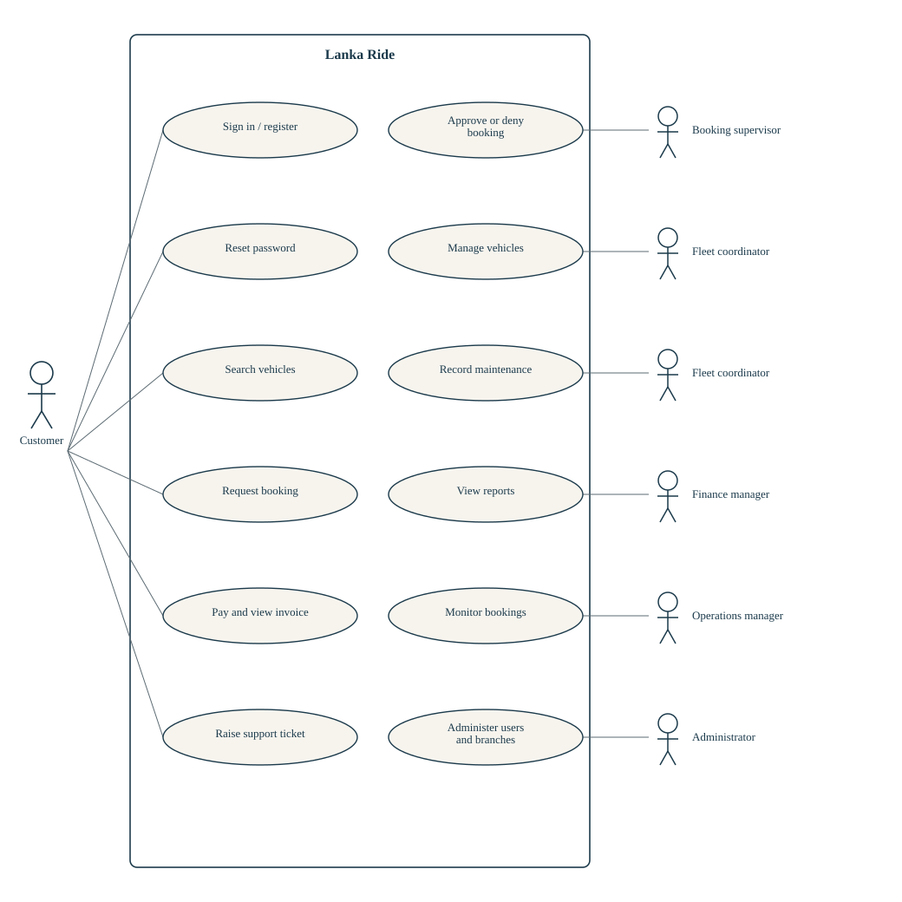
The customer owns search, booking, payment, and support. Staff use cases sit on the right. Sign-in is shared. Finance also records the payment the customer starts, and the operations manager can also approve a booking.
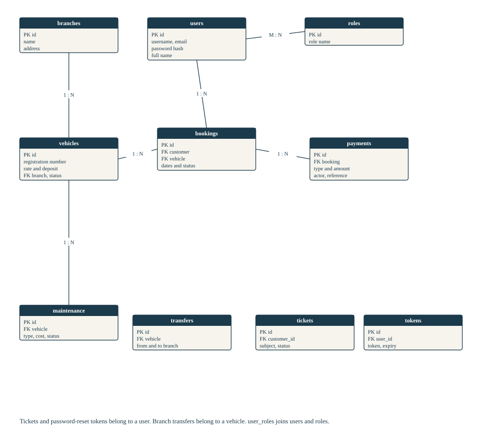
A user has many roles through user_roles, many bookings, and many tickets. A branch has many vehicles. A vehicle has many bookings, maintenance rows, and transfers. A booking has many payment rows. PK is the primary key and FK is a foreign key.
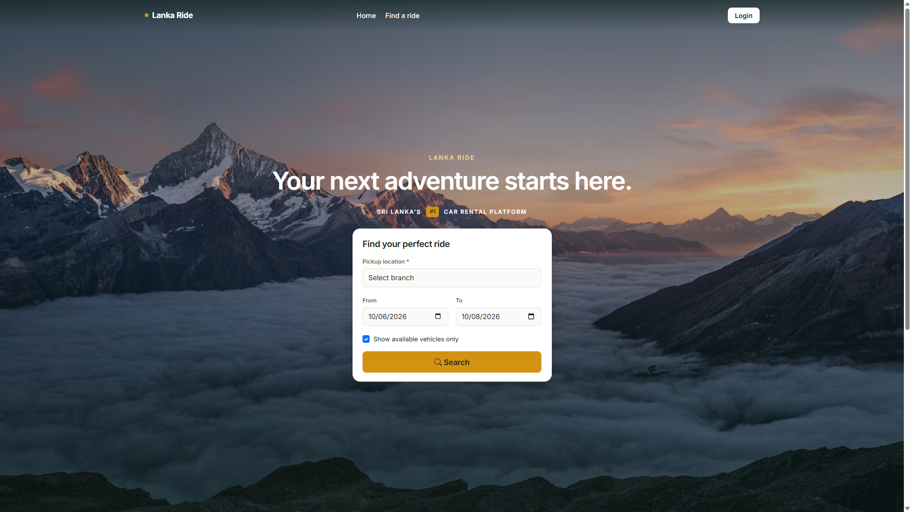
Home page. The guest chooses a branch and the pickup and return dates.
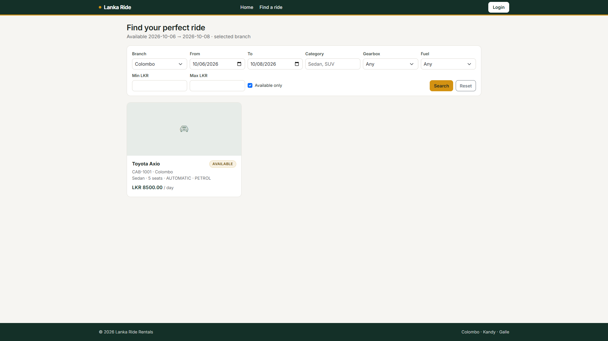
Search results for Colombo, 6–8 October 2026. The Toyota Axio at Colombo is offered at the daily rate.
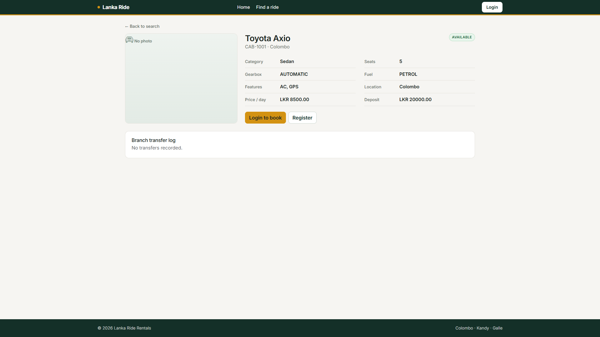
Vehicle page. Status, features, daily rate, and deposit are shown before a request can be made.
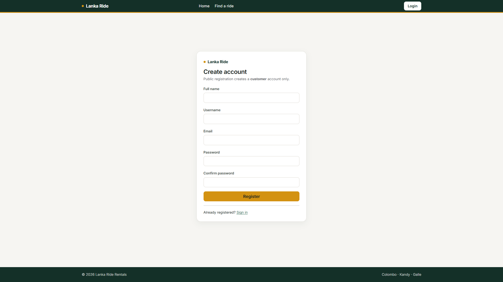
Registration. A public account is always a customer.
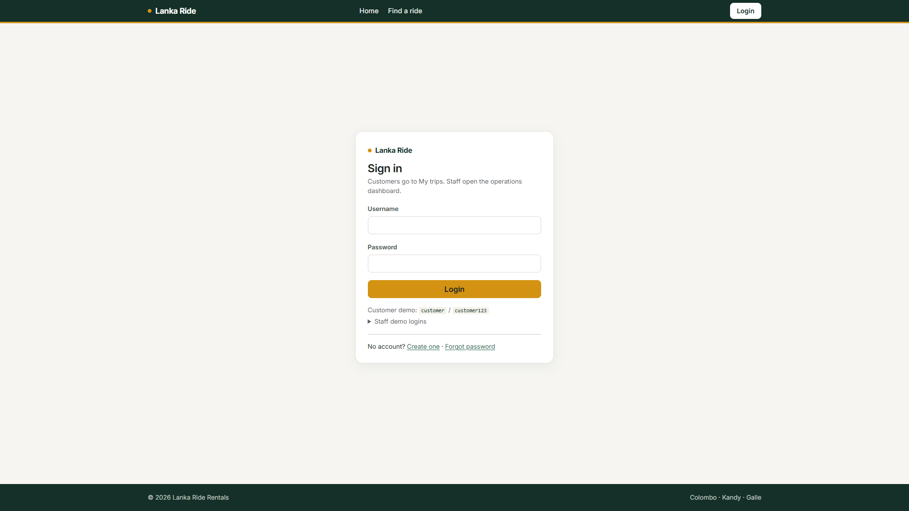
Sign-in. Customers continue to My trips. Staff continue to the operations dashboard.
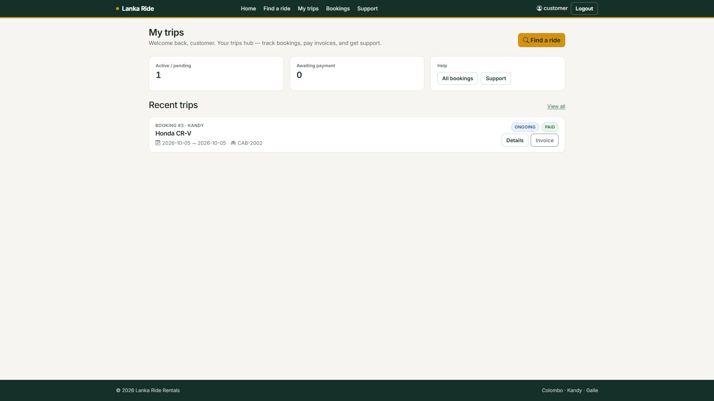
Customer home. My trips shows the active booking, payment state, and the invoice link.
Home. Full-page search by branch and dates, then a card list of vehicles that are free for that window.
Register and login. Registration collects name, username, email, and password, and creates a customer only. Login sends each role to its own landing page. Password reset is a separate form.
My trips. The customer sees active and unpaid bookings, and can open details, the invoice, all bookings, or support.
Operations dashboard. Staff see fleet size, availability, maintenance count, pending bookings, and branches.
Bookings. The list shows status and payment status. A supervisor approves, denies, or records pickup and return from this area.
Payments. The ledger lists each rental, deposit, refund, or charge, with the staff actor and a link to the invoice.
Maintenance. Open and closed jobs sit with the vehicle. A new job takes the car out of search.
Reports. Daily, monthly, and branch figures, with CSV and print.
Support. Ticket list and the form a customer uses to ask for help.
Admin. Add a branch, list current branches, and create a staff user with one role.
User registration and authentication. Password reset. Role-based menus and server-side checks. Vehicle catalogue and date search. Branch transfer log. Booking request, approval, denial, cancellation, pickup, and return. Maintenance that blocks hire. Mock payment, invoice, refund, late fee, and damage charge. Operations dashboard. Daily, monthly, and branch reports with CSV and print. Support tickets and notification log. Administrator creation of branches and staff users.
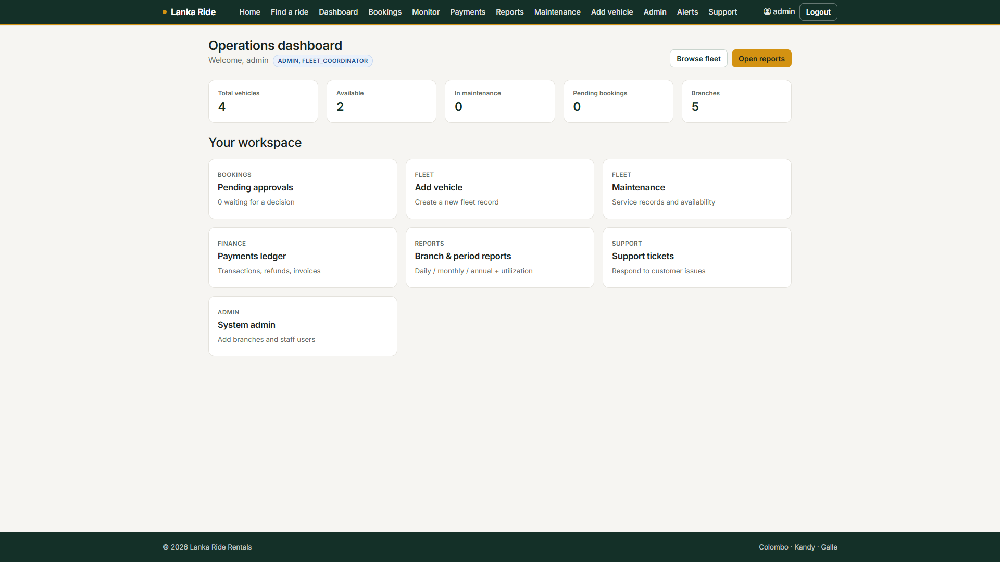
Operations dashboard for an administrator, who also holds the fleet-coordinator role. Counts come from the live database.
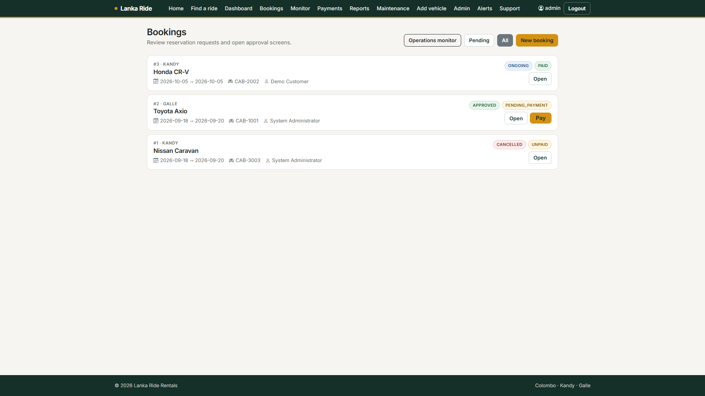
Booking list. One trip is ongoing and paid, one is approved and awaiting payment, and one is cancelled.
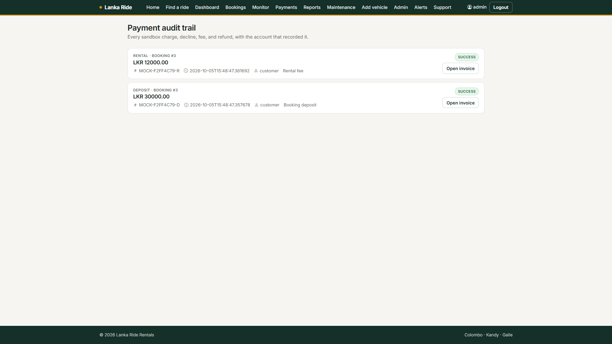
Payment ledger for the Honda CR-V booking: rental LKR 12,000 and deposit LKR 30,000, each marked successful, with the invoice link.
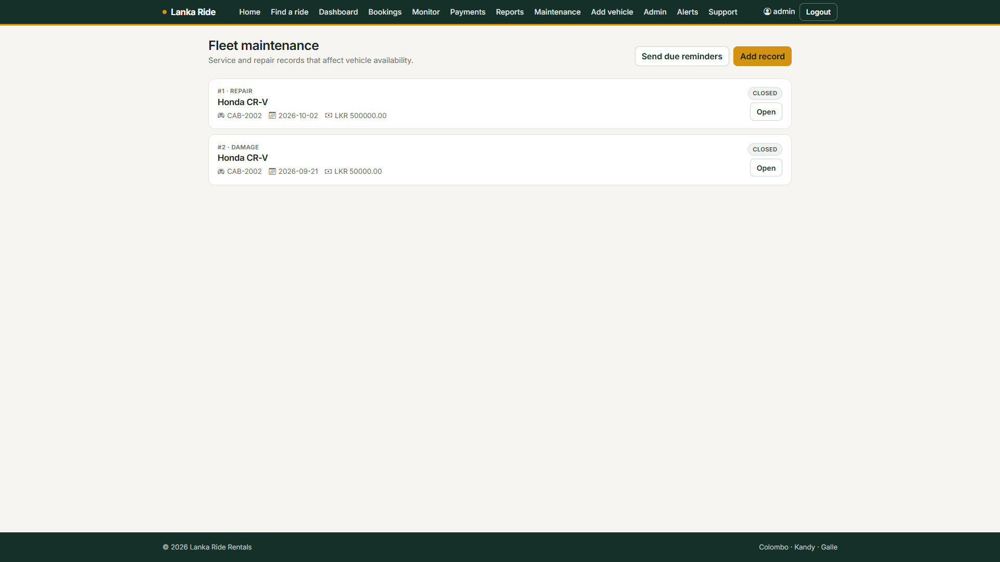
Closed repair and damage records on the same vehicle. An open job would set the vehicle to maintenance.
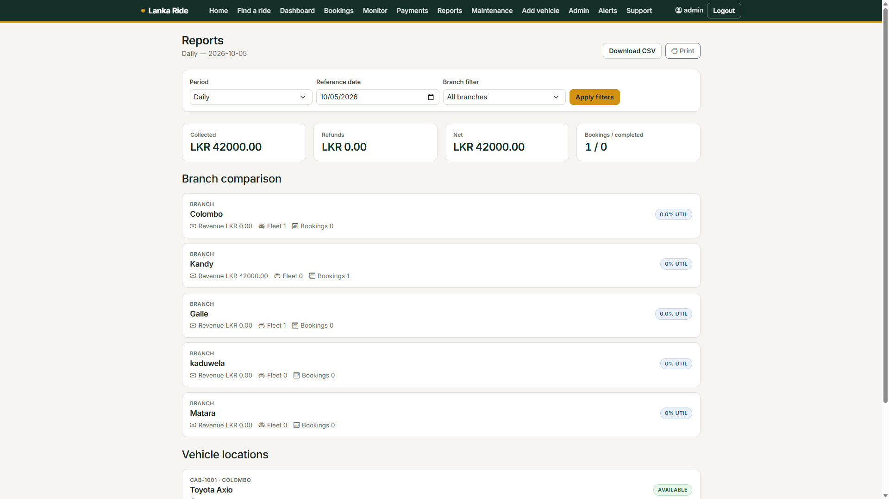
Daily report for 5 October 2026. Collected and net amounts match the two successful payment rows. CSV and print are on the page.
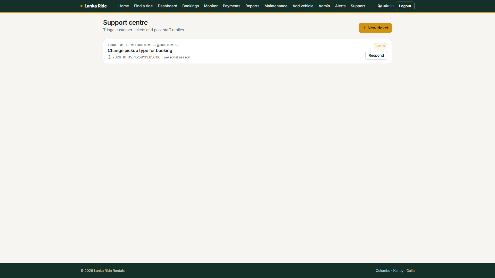
Support centre. Ticket 1 is open, raised by the demonstration customer.
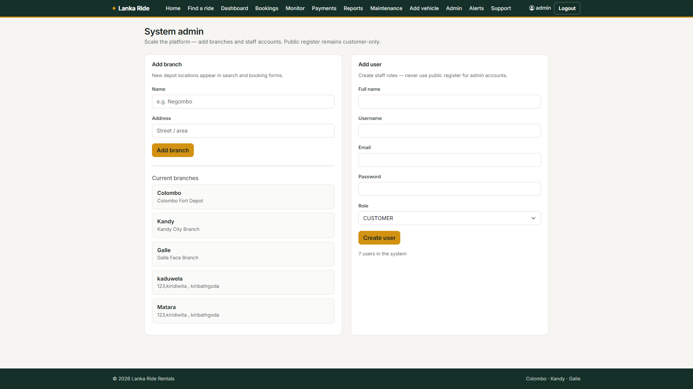
Administration. Current branches are Colombo, Kandy, Galle, Kaduwela, and Matara. New staff are created here, not on the public register.
Lanka Ride was built with Scrum. Samaranayake was Scrum Master and Wickramasinghe was Product Owner. The other four members were developers. Each member owned one use case and one long-lived feature branch. Work was integrated onto the shared release line once that module could be shown against the common database.
The order of sprints followed the data dependencies. A payment cannot exist before a booking, and a revenue report cannot exist before payment rows. Authentication was shared in the first sprint because every later screen needs it. GitHub holds the repository, the feature branches, and the integrated release.
| Sprint | Main Activities |
|---|---|
| Sprint 1 | Project setup, MySQL, registration, sign-in, password hashing, role-based landing pages, and the vehicle catalogue with search. |
| Sprint 2 | Booking request, approval and denial, cancellation, and maintenance that removes a vehicle from hire. |
| Sprint 3 | Rental and deposit payments, invoice, refunds, late and damage charges, and the pickup and return checklist. |
| Sprint 4 | Operations dashboard, daily and branch reports, CSV and print, support tickets, notification log, and administration of branches and staff. |
The main integration risk was the shared navigation bar and the security rules, because every module adds a menu entry. Those files were treated as integration points and reviewed when a feature branch was brought across, rather than letting each branch invent its own login.
| Member | Main Contribution |
|---|---|
| Sakalasooriya S.A.A.A. | Vehicle management, catalogue search, and system administration. Shared the first-sprint authentication work. |
| De Silva D.L.K.C. | Fleet maintenance, and the rule that a vehicle under service cannot be booked. |
| Samaranayake P.I.S. | Scrum Master. Booking and reservation, including approval and the return mileage check. |
| Kavindi P.D.N. | Payment and billing: ledger rows, invoice, refunds, and late or damage charges. |
| Wickramasinghe R.D.W.K.G.S. | Product Owner. Operations dashboard and revenue, branch, and location reports. |
| Pahasara Y.A.P. | Customer support, notification log, and a pass over role menus. Shared the first-sprint authentication work. |
| Phase | Period | Key Milestones / Deliverables |
|---|---|---|
| Project initialisation and planning | Start of the module | Group agreement, backlog, stack choice, and the repository. |
| Sprint 1: accounts and vehicles | About week 6–7 | Authentication, roles, vehicle records, and basic search. About 25 percent of the product. |
| Sprint 2: booking and maintenance | About week 8–9 | Request and approval, and a maintenance hold that blocks hire. About 50 percent. |
| Sprint 3: payment and return | About week 10–11 | Payments, invoice, refunds, and return mileage. Dashboards started. About 75 percent. |
| Sprint 4: reports and support | About week 12–14 | Reports, tickets, notification log, integration, and the final report. 100 percent of the six use cases. |
| Submission | 5 October 2026 | Final report, demonstration build, and evaluation. |
Lanka Ride runs as one Spring Boot application on MySQL. The six agreed areas are present: vehicles, maintenance, booking, payment, reporting, and support, together with sign-in, password reset, and administration.
A guest can search a branch for a date range. A customer can request a trip, see it under My trips, and open an invoice after payment. A supervisor can approve or deny. Finance can record the rental and the deposit. Fleet can hold a car for maintenance so it leaves the search results. Operations can read a daily report and export it. An administrator can add a branch and a staff user. The screens in this report were captured from that running system on 5 October 2026.
The hardest design choice was keeping three statuses apart: whether the vehicle can be hired, how far the booking has progressed, and whether the money has been taken. One combined field would have hidden an approved booking that is still unpaid, or a paid car that later goes to the workshop. Splitting the fields added checks in the service layer and removed false “available” results.
A second difficulty was access control. Hiding a link does not stop a customer from typing a staff address. URL rules and method security were both required. A third difficulty was integration. Modules were developed on separate branches, and the shared layout and security configuration produced conflicts when those branches were combined. The group resolved them by reviewing those shared files at integration time and by testing a full journey: search, request, approve, pay, and report.
The system could be extended later by adding:
None of these is required to demonstrate the six use cases. The boundary for any later payment work stays the same: card details must not be stored in Lanka Ride, and a staff account must keep only the role that needs it.
| Name | Specific Role | Challenges Faced | How Challenges Were Overcome | Key Lessons Learned | Reflection on the Project |
|---|---|---|---|---|---|
| Sakalasooriya S.A.A.A. IT25102266 | Developer for vehicle management and system administration (UC-02). Shared sprint-1 authentication. | Search had to ignore cars already promised or in the workshop, and the same account model had to serve customers and staff. | Availability is applied in the vehicle query and again when a booking is saved. Staff accounts are created only by an administrator. | A catalogue is a set of rules about time and status, not only a list of rows. | Owning the first sprint meant later members could sign in and attach bookings to real vehicles. I would lock the security rules before each new menu item is added. |
| De Silva D.L.K.C. IT25102264 | Developer for fleet maintenance (UC-01). | A car in service could still appear in search if maintenance and booking did not share one status. | Opening a job sets the vehicle to maintenance. The booking check refuses dates that overlap an open job. Closing the job restores availability. | A rule that crosses modules belongs in the service that writes the booking, not only on the maintenance screen. | The useful test was trying to book a car I had just marked as under repair. When that request was refused, the two modules were actually integrated. |
| Samaranayake P.I.S. IT24101349 | Scrum Master and developer for booking and reservation (UC-03), including return mileage. | A booking has more states than yes or no, and return mileage must flag a discrepancy without wiping the payment history. | Booking status, payment status, and the discrepancy note are separate fields. The sprint order put booking before payment so the foreign key existed first. | Scrum works when the sprint goal is something the next person can call. | Keeping the sequence honest mattered more than adding screens early. I would keep a written definition of done for “approved but unpaid” so a demo cannot skip it. |
| Name | Specific Role | Challenges Faced | How Challenges Were Overcome | Key Lessons Learned | Reflection on the Project |
|---|---|---|---|---|---|
| Kavindi P.D.N. IT25102265 | Developer for payment and billing (UC-04). | A single balance column would hide whether money was a rental, a deposit, a refund, or a damage charge, and who recorded it. | Each movement is its own payment row with type, actor, mock reference, and outcome. The invoice reads those rows. No card number is stored. | A ledger that only inserts is easier to explain, and to report on, than a balance that is edited in place. | I treated the mock gateway as a boundary. Replacing it later should not require a new booking model. |
| Wickramasinghe R.D.W.K.G.S. IT24101008 | Product Owner and developer for the dashboard and reports (UC-05). | Managers wanted one dashboard, but revenue, fleet location, and booking counts come from three modules finished at different times. | Reports read the payment and vehicle rows rather than keeping a second set of totals. Daily, monthly, branch, and CSV views share that query. | A report is only as current as the tables it reads. It should not cache a private copy of the money. | As product owner I pushed to finish the write-paths before the charts. The daily report is the check that payment and reporting describe the same rupees. |
| Pahasara Y.A.P. IT24102871 | Developer for support and notifications (UC-06), and for checks across role menus. Shared sprint-1 authentication. | Support had to exist even when email was not configured, and a failed alert had to stay visible. | Tickets are stored regardless of mail. The notification log keeps channel, recipient, and delivery state so a failed send can be retried. | A feature that depends on an outside service needs a local record of what was attempted. | Walking through every role’s menu caught links that led to a forbidden page. I would repeat that pass at the end of each sprint, not only at the release. |
Main project repository:
https://github.com/IT25102266/lanka-ride
The integrated line used for this report is release/100-percent. Feature branches follow the module owners: feat/sakalasooriya-vehicle, feat/desilva-fleet, feat/samaranayake-booking, feat/kavindi-payment, feat/wickramasinghe-dashboard, and feat/pahasara-support.